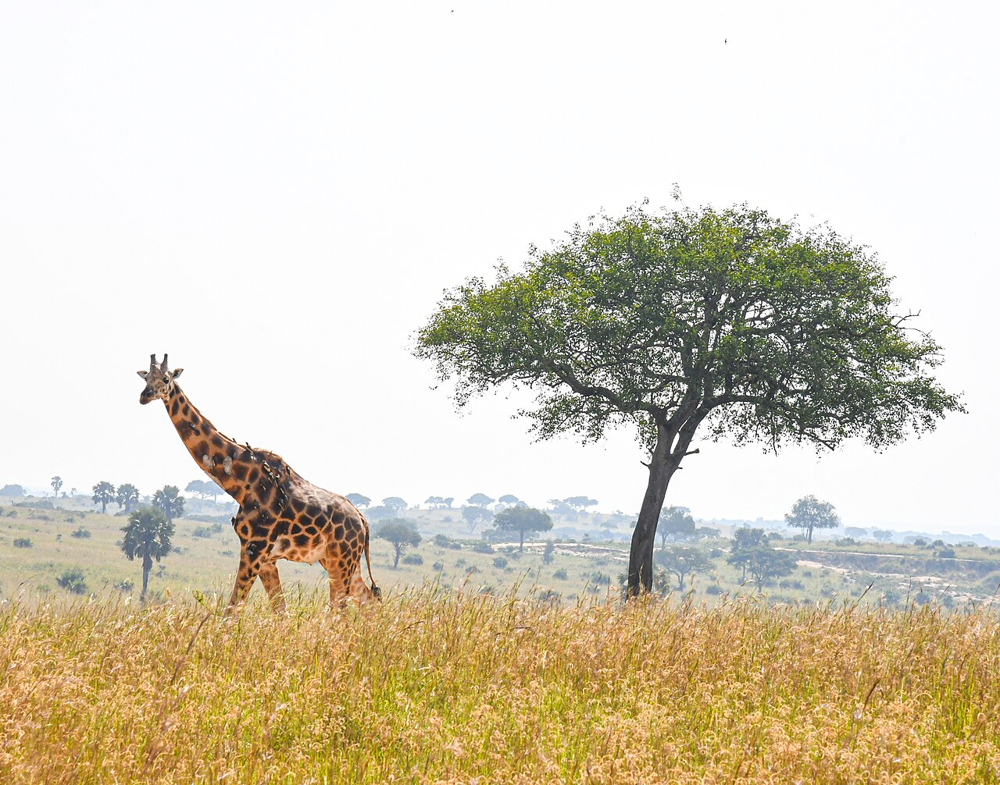
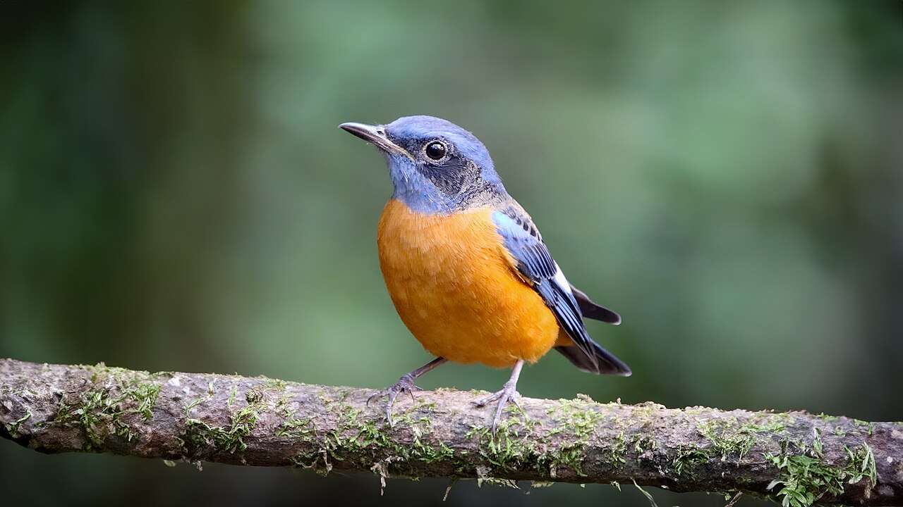
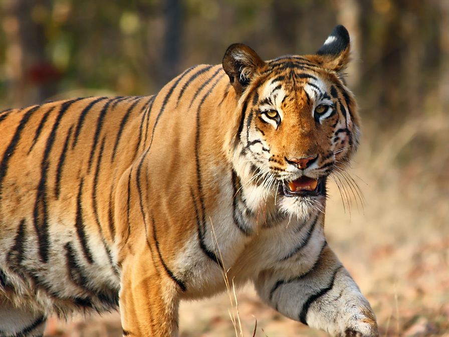
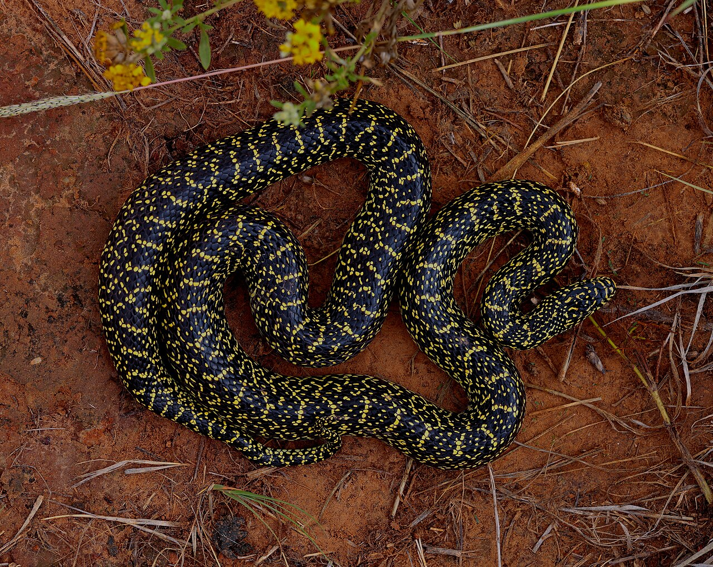

When Nature Speaks,
Technology Listens
Our Living Lens is an Animal Behaviour Based Early Warning System
Animals have super-sensitive senses that feel tremors hours before people do
Elephant
Normal Daily Routine:
Peacefully eating grass and leaves, slowly flapping ears to stay cool, gentle rumbles
Warning Signs to Watch for:
Sudden freeze in place, loud trumpet screams, gathering tightly together, refusing to go into indoor barns

Giraffe
Normal Daily Routine:
Chewing leaves from high branches, walking calmly with slow strides, spread out in the savanna field
Warning Signs to Watch for:
Rushing into a tight group, stretching necks high and starting fixedly in one direction, avoiding trees

Crocodile
Normal Daily Routine:
Laying motionless in the sun on muddy banks, or resting quietly underwater
Warning Signs to Watch for:
Thrashing water suddenly, quick crawling out of deep ponds onto dry land, loud hissing and bellowing

Birds
Normal Daily Routine:
Hovering around flowers and feeders, singing regularly, flying between familiar branches
Warning Signs to Watch for:
Sudden total silence (no singing), flying in frantic low circles near the ground, abondoning nests

Tigers & Big Cats
Normal Daily Routine:
Sleeping in the shade during daytime, stretching lazily. calmly marking territory trees
Warning Signs to Watch for:
Relentless pacing along the fence line, continuous low growls, refusing to enter night dens

Snakes & Reptiles
Normal Daily Routine:
Curled up quietly in warm hollows or under heat lamps resting between meals
Warning Signs to Watch for:
Crawling out of underground holes in broad daylight, climbing glass walls rapidly, striking onto empty air